RTESArenaAssist는 The Elder Scrolls: Arena를 플레이할 때 도와주는 앱이에요. 번역, 지도, 일지, 로그, 세이브 관리, 스크린샷 캡처, 사전, 설명서를 게임 옆에서 보여 줘요.
이미지는 Assist를 표시 언어로 설정하고 "다크" 테마, 기본 설정, 연결 안 됨 상태에서 촬영했어요. 연결 중에는 Arena의 현재 화면과 게임 상태에 따라 표시가 바뀌어요.
Assist의 기본 사용법은 Arena를 실행하고 Assist로 연결한 뒤 ⊞ 버튼을 눌러 레이아웃 모드로 들어가 플레이하는 거예요. 레이아웃 모드에서는 DOSBox 게임 화면과 Assist의 번역, 지도 등의 탭을 한 화면에 나란히 배치할 수 있어서 Alt+Tab으로 전환하지 않고도 확인할 수 있어요.
설정의 자세한 내용은 이 설명서의 "설정 대화상자" 페이지를 참고하세요.
공개 버전에는 Arena의 원문 텍스트 데이터가 들어 있지 않아요. 처음 실행할 때 Assist가 사용자 컴퓨터에 있는 Arena 폴더에서 번역 파일을 만들어요.
먼저 Assist의 표시 언어를 선택하세요. 선택한 언어는 이 화면에서 바로 적용돼요.
| 컨트롤 | 설명 |
|---|---|
| 언어 드롭다운 | Assist 화면의 언어를 선택해요. 이 화면에서는 일본어, 영어, Español만 선택할 수 있어요. 다른 언어는 시작한 뒤 설정 대화상자의 "일반" 탭에 있는 "표시 언어"에서 선택하세요. |
| 다음 | Arena 폴더 지정 단계로 넘어가요. |
Arena를 실행한 상태로 진행하면 Assist가 실행 중인 Arena에서 설치 위치를 자동으로 찾아요. 찾지 못하면 찾아보기…로 Arena의 데이터 폴더를 지정하세요.

| 항목 | 설명 |
|---|---|
| 게임 설치 폴더 | Arena의 ARENA 폴더를 지정하세요. |
| 찾아보기… | 폴더 선택 대화상자에서 Arena 폴더를 지정해요. |
| 다시 확인 | 실행 중인 Arena를 다시 찾아요. |
| 번역 파일 만들기 | 올바른 Arena 폴더가 확인되면 번역 파일 만들기 단계로 넘어가요. |
Assist는 Arena 폴더의 데이터로 번역 파일을 만들어요. 끝나면 메인 창이 열려요.

만드는 동안 진행 표시줄과 현재 단계가 표시돼요. 실행 중인 Arena에서도 데이터를 읽으므로 끝날 때까지 Arena를 닫지 마세요.
Assist는 위쪽에 연결 바, 가운데에 탭 영역, 아래쪽에 상태 표시줄이 있어요.
시작 직후에는 Assist가 연결되지 않은 상태예요. Arena / DOSBox를 실행한 상태에서 오른쪽 위의 연결 버튼을 누르세요.

| 영역 | 설명 |
|---|---|
| 연결 상태 | 연결 안 됨 또는, 연결 중에는 인식한 화면 이름과 IMG 이름 등을 표시해요. |
| 연결 / 연결 해제 | DOSBox 안의 Arena에 연결하거나 연결을 해제해요. |
⏸ / ▶ / ■ | 음성 읽기를 일시 정지 / 재개 / 중지해요. 음성 읽기는 설정 대화상자의 "음성 읽기" 탭에서 켜면 사용할 수 있어요(기본값은 꺼짐). |
⊞ | 레이아웃 모드를 켜고 꺼요. 오른쪽 클릭하면 레이아웃 메뉴가 열려요. |
📷 | 스크린샷을 저장해요. 레이아웃 모드에서는 레이아웃 전체를 이미지 한 장으로 저장해요. 게임 화면(DOSBox)에 포커스가 있을 때는 단축키(기본값 F12)로도 같은 방식으로 저장할 수 있어요. |
⚙ | 설정 대화상자를 열어요. |
시작 직후 상태 표시줄에 나오는 "단축키 등록됨: F12" 메시지는 캡처 단축키를 사용할 수 있다는 뜻이에요. 이 키는 설정 대화상자의 "일반" 탭에서 바꿀 수 있어요.
연결되면 연결 바의 왼쪽 끝에 인식한 화면 이름이 표시돼요. 아래 예시는 Arena의 타이틀 화면에 연결한 모습이에요.
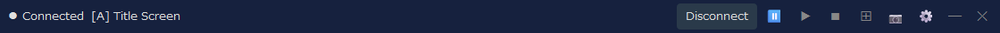
그 화면에서 쓰는 IMG 이름도 화면 이름 오른쪽에 표시돼요(타이틀 화면처럼 IMG를 쓰지 않는 화면에는 나오지 않아요). 설정 대화상자의 "화면" 탭에서 화면 이름과 IMG 이름을 표시할지 고를 수 있어요.
Assist는 레이아웃 모드로 사용하도록 만들어졌어요. 탭은 일반 창에서도 쓸 수 있지만, 레이아웃 모드에서는 게임 화면, 번역, 지도, 로그 등을 한 화면에 고정해 함께 확인할 수 있어요.
기본 레이아웃에서는 DOSBox 게임 화면이 왼쪽, Assist의 주요 탭이 오른쪽, 보조 패널이 아래쪽에 놓여요. 플레이하는 동안 오른쪽에서 지도나 일지를 확인하고, 아래쪽 패널이나 번역 탭에서 현재 화면의 번역을 확인할 수 있어요.
| 동작 | 설명 |
|---|---|
⊞ 왼쪽 클릭 | 레이아웃 모드를 시작 / 종료해요. |
⊞ 오른쪽 클릭 | 배치 형식, 배치할 모서리, 추적 모드, 다시 배치, 항상 위 등을 고를 수 있어요. |
📷 | 레이아웃 모드에서는 DOSBox와 Assist를 포함한 레이아웃 전체를 이미지 한 장으로 저장해요. |
연결 해제 | Arena와의 연결을 해제해요. 연결을 해제하기 전에 레이아웃 모드를 끝내면 화면을 정리하기 쉬워요. |
각 탭의 스크린샷은 화면이 어떻게 구성되는지 보여 주기 위한 거예요. 연결 중에는 Arena의 현재 화면과 게임 상태에 따라 표시가 갱신돼요.
현재 화면의 번역을 보여 주는 중심 탭이에요. 타이틀 화면, 캐릭터 생성, 대화, 시설, 아이템, 주문 등 상황에 따라 표시가 바뀌어요.
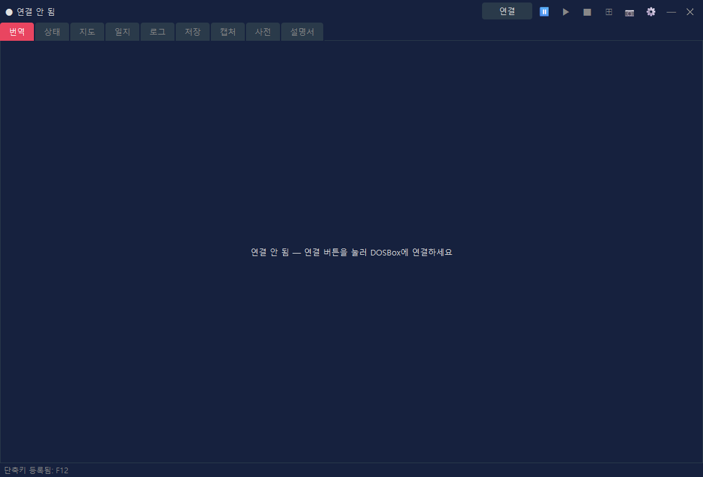
| 표시 | 설명 |
|---|---|
| 번역 | 현재 화면이나 이벤트의 번역을 보여 줘요. |
| 원문 | 설정에 따라 대응하는 영어 원문도 함께 보여 줘요. |
| 전용 보기 | 직업 목록, 종족 목록, 장비, 시설 목록, 구매 목록 등은 보기 쉬운 전용 화면으로 바뀌어요. |
설정의 "전투 정보" 탭에서 전투 정보를 번역 탭에 표시할 수도 있어요. "전투 정보와 기본 표시 모두" 또는 "전투 정보 전체 표시"를 고른 다음 "문자 정보" 또는 "적 게이지 표시"를 고르세요. 기본값은 "표시 안 함 (기본 표시 유지)"으로, 평소의 번역 탭 표시를 그대로 유지해요.
캐릭터의 능력치와 상태를 보여 주는 탭이에요. 캐릭터 생성이 끝난 뒤나 플레이 중 연결된 동안 상태 정보가 표시돼요.
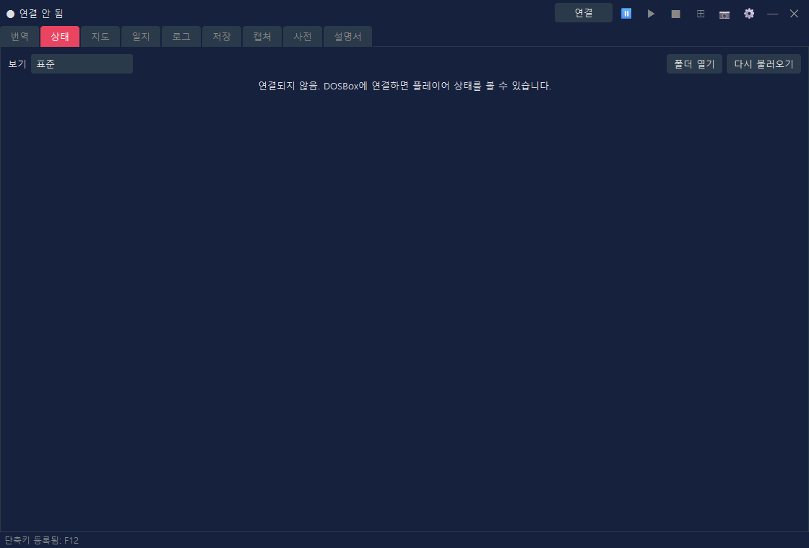
| 표시 | 설명 |
|---|---|
| 보기 | "표준"(지금까지의 표시) 또는 디자인(캐릭터 시트) 중 하나를 고르세요. 번역 탭의 상태 화면과 능력치 분배도 여기서 고른 보기를 따라요. |
| 능력치 | 힘, 지능 같은 주요 능력치를 보여 줘요. |
| 상태 수치 | 체력, 피로도, 마력 등을 보여 줘요. |
| 값 변경 | 능력치 변경 같은 조작은 치트 설정을 직접 켠 경우에만 사용할 수 있어요("표준" 보기에서). |
원하는 디자인으로 상태를 보여 주는 기능이에요. "보기"에서 "표준" 이외의 항목을 고르면 고른 디자인으로 상태가 표시돼요. 디자인은 HTML 파일(템플릿)이며 기본 제공 디자인이 8가지 있어요. 직접 만들 수도 있어요. 디자인에 따라 얼굴과 전신 이미지(장비 포함), 캐릭터의 상태(질병, 독, 마비 등), 각 부위의 방어 등급(장비로 계산한 값이며 낮을수록 잘 보호돼요)을 보여 줘요. 얼굴과 전신 이미지는 사용 중인 Arena의 파일로 만들어요.
| 컨트롤 | 설명 |
|---|---|
| 폴더 열기 | 직접 만든 캐릭터 시트(HTML 파일)를 두는 폴더를 열어요. 이 폴더는 RTESArenaAssist.exe와 같은 위치의 character_sheets예요. 처음 열 때는 기본 제공 디자인의 사본이 놓여요. 이 폴더에 둔 파일은 "보기" 목록에 "(폴더)"가 붙어서 나타나요. |
| 다시 불러오기 | 폴더의 캐릭터 시트를 다시 불러와요. 파일을 바꾼 뒤에 누르세요. |
기본 제공 디자인 목록, 캐릭터 시트의 작동 방식, 넣을 수 있는 값과 작성 방법은 이 설명서의 "상태 화면 디자인 (캐릭터 시트)" 페이지를 참고하세요.
던전, 도시, 필드, 건물 내부 등의 오토맵을 보여 주는 탭이에요. 게임 속 현재 위치에 맞춰 표시가 갱신돼요.
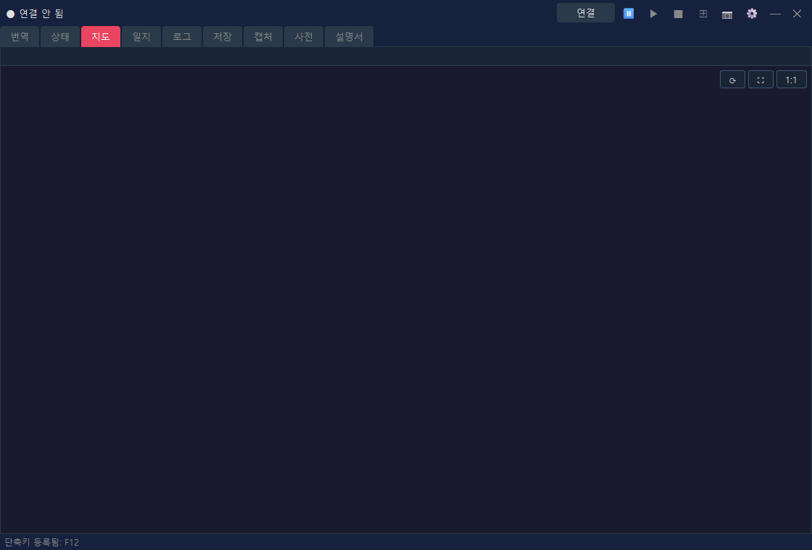
| 표시 | 설명 |
|---|---|
| 현재 위치 | 연결된 게임의 상태에서 현재 지도와 위치를 보여 줘요. |
| 오토맵 | 탐험한 범위, 벽, 입구, 필드 지형 등을 그려요. |
| 표시 설정 | 격자선, 청크 좌표, 필드 확장 표시 등은 설정 대화상자에서 조정할 수 있어요. |
게임의 일지에 기록된 내용을 표시 언어로 읽을 수 있는 탭이에요.
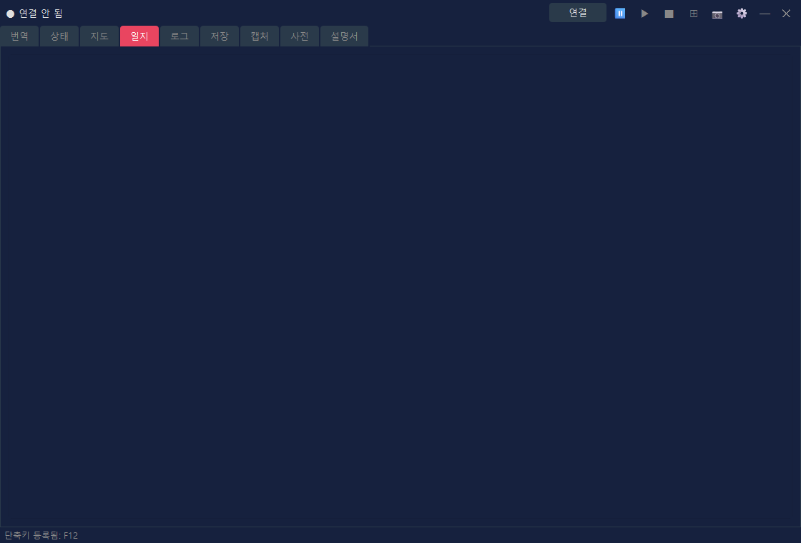
| 표시 | 설명 |
|---|---|
| 날짜와 제목 | 일지 항목별 날짜와 요약을 보여 줘요. |
| 본문 | 일지의 본문을 표시 언어로 보여 줘요. |
| 갱신 | 게임에서 일지가 갱신되면 Assist의 표시도 함께 갱신돼요. |
Assist가 보여 준 번역을 기록으로 다시 볼 수 있는 탭이에요. 놓친 부분을 다시 읽을 때 편리해요.
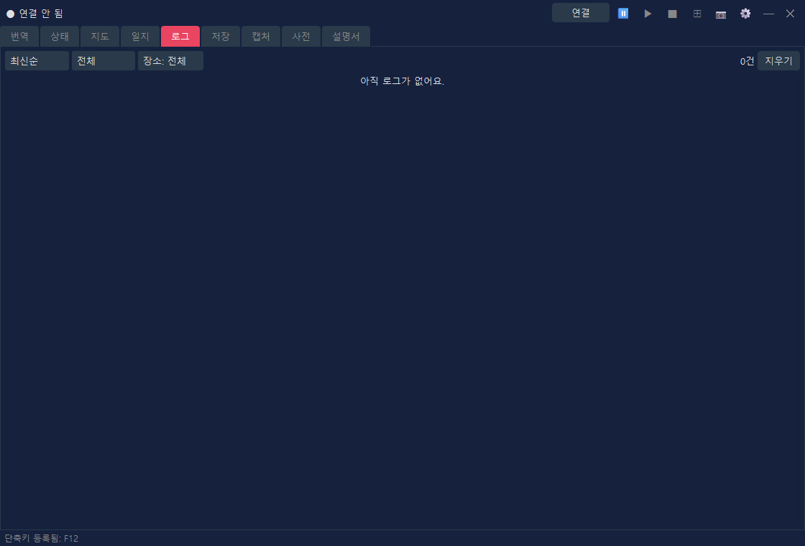
| 컨트롤 | 설명 |
|---|---|
| 정렬 순서 | 최신순과 오래된 순을 전환해요. |
| 필터 | 종류나 장소로 로그를 좁혀 보여 줘요. |
| 지우기 | 표시 중인 로그를 지워요. |
전투 로그 저장을 켜 두고 기록된 내용이 있으면 로그 탭 안에서 "일반 로그"와 "전투 로그"를 전환할 수 있어요. 전투 로그가 없으면 지금까지처럼 일반 로그만 표시돼요.
Arena의 세이브 슬롯과 백업을 관리하는 탭이에요. 복원 전에 자동으로 만드는 백업 등 세이브 데이터 작업을 도와줘요.
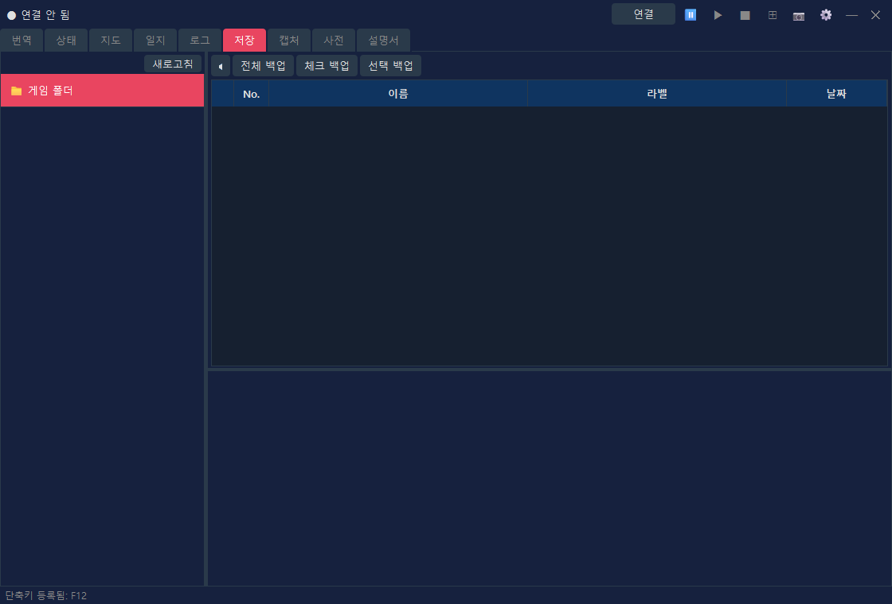
| 컨트롤 | 설명 |
|---|---|
| 슬롯 목록 | Arena의 세이브 슬롯을 나열해요. |
| 백업 | 선택한 세이브를 백업해요. |
| 복원 | 백업에서 세이브 데이터를 복원해요. |
| 삭제 | 필요 없는 백업이나 세이브를 삭제해요. |
📷 버튼으로 저장한 스크린샷을 확인하는 탭이에요. 레이아웃 모드에서 촬영한 이미지도 여기서 열 수 있어요.
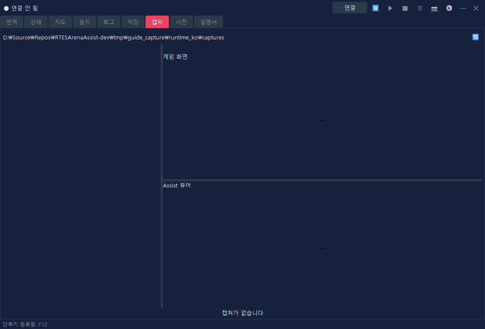
| 컨트롤 | 설명 |
|---|---|
| 목록 | 저장된 캡처를 보여 줘요. |
| 미리보기 | 선택한 이미지를 확인할 수 있어요. |
| 잠금 | 남겨 두고 싶은 이미지가 삭제되지 않게 보호해요. |
| 삭제 | 선택한 이미지나 필요 없는 이미지를 삭제해요. |
Assist의 번역 사전과 던전 텍스트를 검색하는 탭이에요. 게임에 나오는 단어와 문장을 찾아볼 때 쓸 수 있어요.
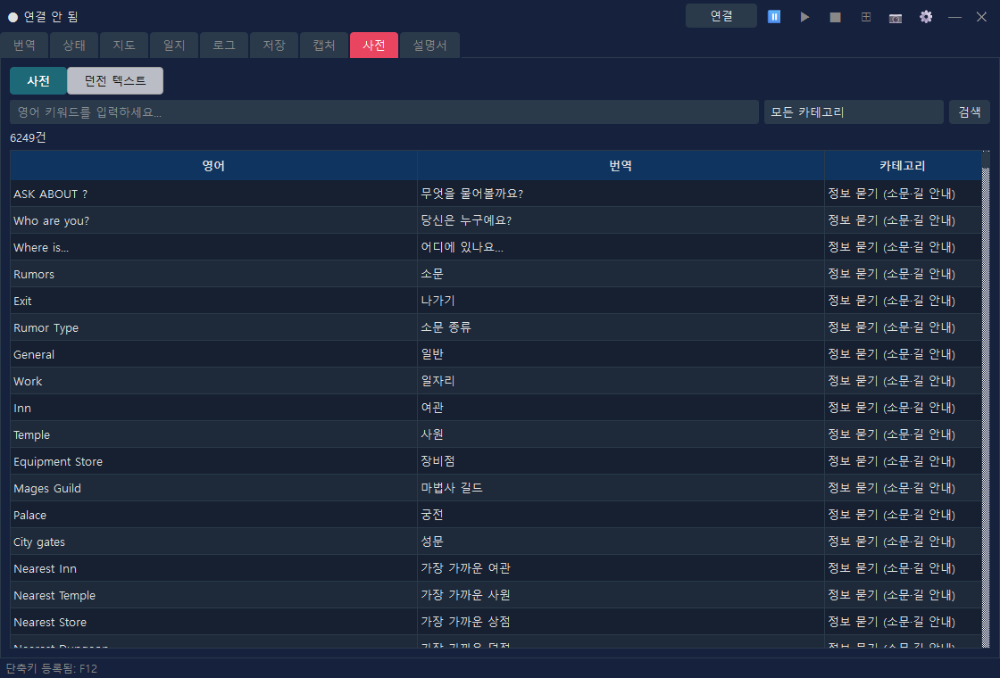
| 표시 방식 | 설명 |
|---|---|
| 사전 | 영어 키워드, 번역, 카테고리로 검색해요. |
| 던전 텍스트 | INF에서 가져온 던전 텍스트를 검색하고 보여 줘요. |
Arena의 기본 조작과 시스템에 대한 설명, Assist의 기능 설명을 표시 언어로 읽을 수 있는 탭이에요. 플레이 중에 조작법이나 용어를 확인하고 싶을 때 사용하세요.
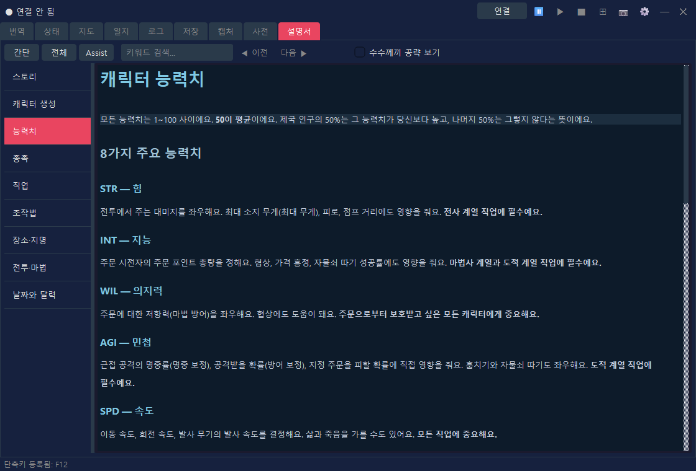
| 컨트롤 | 설명 |
|---|---|
| 간단 / 전체 / Assist | 표시할 내용을 전환해요(아래 표 참고). |
| 키워드 검색 | 설명서에서 검색해요. |
| 왼쪽 목록 | 스토리, 캐릭터 생성, 조작법, 전투·마법 같은 장을 전환해요. |
| 전환 | 내용 | 언어 |
|---|---|---|
| 간단 | 게임 설명(9개 장) | 12개 언어 |
| 전체 | 공식 매뉴얼의 번역본(번역 팩을 가져온 뒤에 표시) | 현재는 일본어만 |
| Assist | Assist의 기능 설명(기본 조작, 설정 대화상자, 상태 화면 디자인 (캐릭터 시트)) | 12개 언어 |
전체 버전(공식 매뉴얼의 번역본)
"전체"에서는 공식 매뉴얼(플레이어 가이드와 부록)의 번역본을 읽을 수 있어요. 번역본은 본 앱과 별도로 표시 언어별 번역 팩(RTESArenaAssist-manual-<언어>.zip)으로 매뉴얼 다운로드 페이지에서 배포해요(현재는 일본어만). 처음 사용할 때 다음 순서로 팩을 가져오세요.
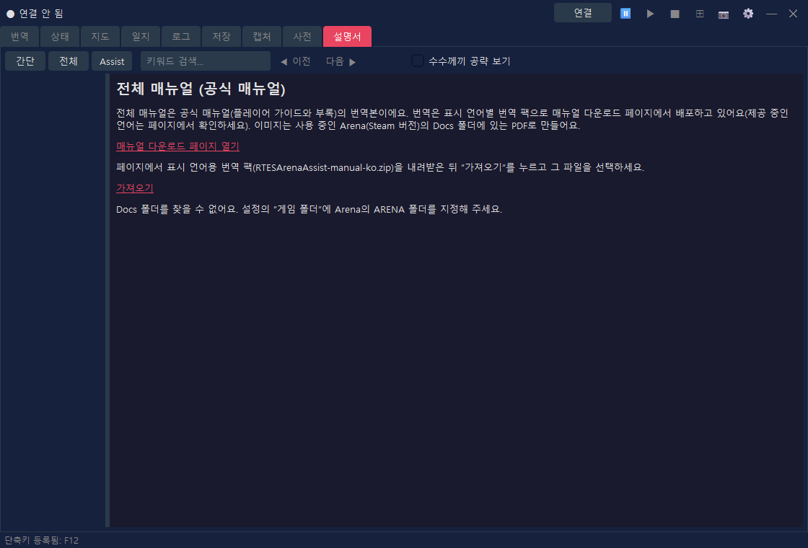
설명서의 이미지는 사용 중인 Arena(Steam 버전)의 Docs 폴더에 있는 Player Guide.pdf로 만들어요. PDF를 찾지 못하거나 버전이 다르면 텍스트만 표시돼요. 설정의 "게임 폴더"를 확인하고 "이미지 다시 만들기"를 누르면 이미지도 표시돼요. 가져온 뒤에는 내려받은 파일을 삭제해도 돼요. Assist 자체는 인터넷에 연결하지 않아요(다운로드는 사용자의 브라우저에서 해요).
"전체"에는 Docs 폴더의 공식 매뉴얼(영어 PDF)을 여는 링크도 표시돼요. 표시 언어가 영어이면 번역 팩 대신 이 링크만 표시돼요.
연결을 눌러 Arena / DOSBox에 연결하세요.⊞을 눌러 레이아웃 모드로 들어가세요.📷 또는 단축키(기본값 F12)로 캡처하세요.⊞으로 레이아웃 모드를 끝낸 뒤 필요하면 연결 해제를 누르세요.레이아웃 모드의 표시 크기, 배치 형식, 번역 패널, 캡처 폴더 등은 설정 대화상자에서 조정할 수 있어요. 번역을 음성으로 읽게 하려면 설정 대화상자의 "음성 읽기" 탭에서도 켜세요.